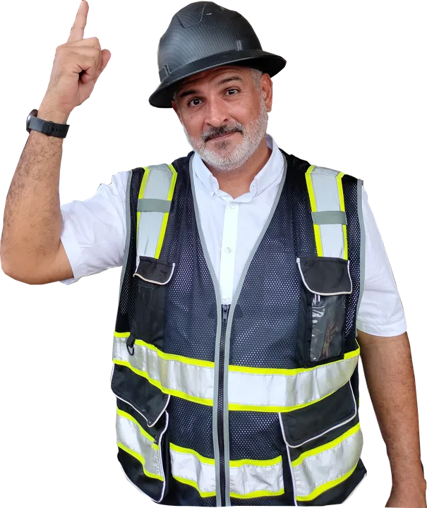
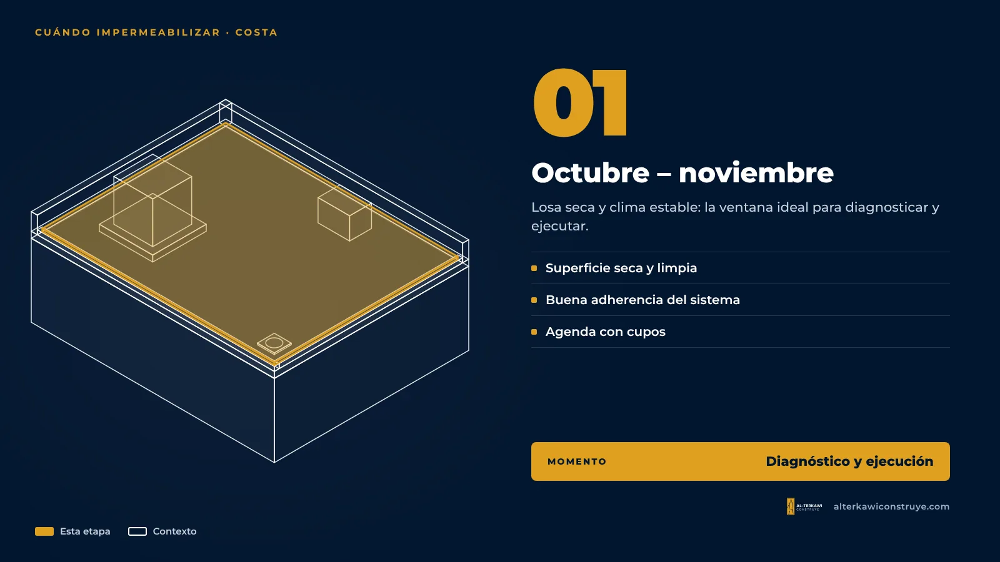
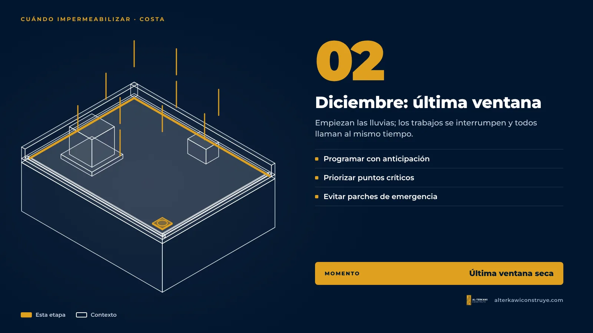
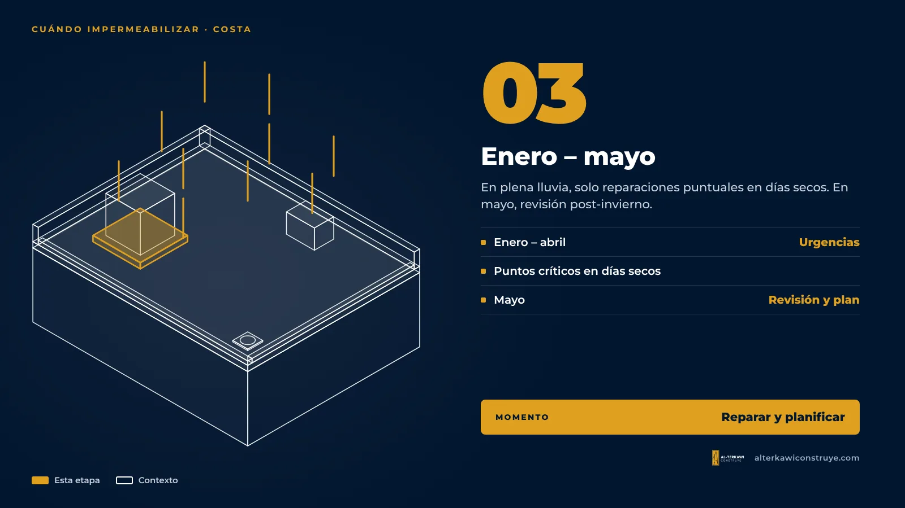

¿Cuándo impermeabilizar tu losa en Guayaquil? Por qué noviembre es el mes clave

En la Costa ecuatoriana la temporada de lluvias suele empezar hacia diciembre o enero y se extiende hasta abril o mayo. Casi todos los propietarios se acuerdan de la losa el día del primer aguacero, cuando la gotera ya está encima de la cama o del escritorio. El problema es que ese es justamente el peor momento para impermeabilizar.
Por qué la losa tiene que estar seca

Los sistemas de impermeabilización, tanto líquidos como membranas asfálticas, necesitan una superficie limpia y seca para adherirse. Si el concreto tiene humedad atrapada, el producto no se pega bien, se forman ampollas y el sistema falla antes de tiempo. Después de una lluvia fuerte, una losa puede tardar en secarse lo suficiente, y en temporada de lluvias eso significa trabajos que se interrumpen una y otra vez.
Lo que pasa si esperas

- Daños interiores: cielo raso manchado o caído, pintura soplada, muebles y equipos mojados, riesgo en instalaciones eléctricas.
- Reparaciones de emergencia: los parches rápidos en plena lluvia suelen durar poco y se pagan dos veces.
- Agenda llena: en temporada todos llaman al mismo tiempo, y los buenos aplicadores se ocupan primero.
El calendario ideal
| Momento | Qué hacer |
|---|---|
| Octubre – noviembre | Diagnóstico y ejecución: losa seca, clima estable. |
| Diciembre | Última ventana: programar con anticipación. |
| Enero – abril | Solo reparaciones puntuales y urgencias. |
| Mayo | Revisión después del invierno: ver cómo trabajó el sistema y planificar. |
¿Y si ya está lloviendo?

Se puede intervenir aprovechando los días secos, priorizando los puntos críticos (sumideros, encuentros con paredes, bases de tanques), y dejar el sistema completo para la siguiente ventana de clima. Lo importante es no improvisar con productos que no corresponden a la superficie.
Siga leyendo
¿Te ayudamos con tu proyecto?
En AL-TERKAWI CONSTRUYE te acompañamos desde el plano hasta la entrega de la obra.

Asegura tu cupo antes de las lluvias
Atendemos un número limitado de losas por semana en temporada. Agenda tu diagnóstico ahora.

Arquitecto en Guayaquil, Samborondón y Daule. Impermeabilización de losas y cubiertas con garantía, diseño y obra.